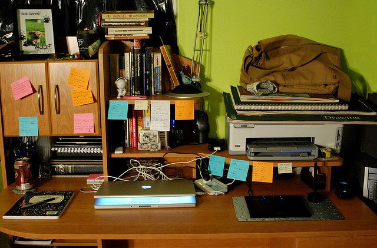

因为你是用照相机，镜头和胶片来摄影的，就必须知道它们是以与你不同的方式来观察世界的，还应该知道这些不同是如果影响你的摄影的。这些不同方式有：照相机会不加选择地把进入视野的任何一件东西都摄入镜头；它在一个矩形的视域内观察世界；它只记下由快门开闭的一个瞬间；根据视点的变化，它看到不同的景象，凡此种种不一而足。
细节
第一个观察上的不同之处是：事实上相机并不会观察。观察意味着感觉，而相机本身并没有感觉；看意味着一个活生生的生灵有意识地或下意识地指挥眼睛去搜索通往别的房间的路，或是寻找一块放在冰箱里的巧克力冰淇淋。
就象岸边的一块岩石，照相机接受各种图象的冲刷，它自身不能选择。选择仅仅是你的事。所以当你要拍摄什么时，你必须把你的有选择的视线转移到照相机无选择的视线上去。你必须用取景器来观察眼前的每一件事物，如果你不这样看，照相机会这样看。照相机会看到草坪上的椅子、三轮车以及其它所有为你眼睛所忽略的零碎东西。
照相机所具有的表现细节的能力并不总是一种累赘，有时它是一种财富。你的眼睛容纳不了丰厚充裕的细节，而照相机却擅长于此。
你的眼睛要时刻注意那些充满了诱人的、美妙的与和谐的细节的景物和主题。一旦发现，就用粒子细的胶片和小光圈把它们拍摄下来。
图片
